4.10. Community level wind simulation: WE-UQ coupled with BRAILS++
Tanmay Vora, Jieling Jiang, Abiy F. Melaku, Seymour Spence
4.10.1. Introduction
This example provides a workflow for simulating wind flow within a community of buildings, defined by those buildings within the region of interest. The example does not (presently) run from WE-UQ. Instead the workflow is run by the user executing a Python script that orchestrates the full pre-processing chain required for a computational fluid dynamics (CFD) simulation of urban wind flow. Specifically, the script performs the following two steps: 1) Building footprints for the community of interest and its surrounding region are first generated using BRAILS++ 2) Using user-provided inputs defining the parameters of the computational simulation, specifically the computational domain, boundary conditions, turbulence modeling, the script finishes by generating all the input files required for an OpenFOAM CFD simulation. Once the input files have been generated, the user can run the wind simulation in OpenFOAM, and finally view the results in Paraview.

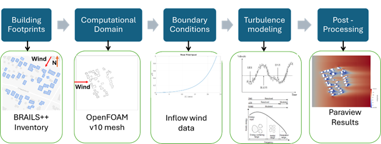
Fig. 4.10.1.1 The WE-UQ and BRAILS++ integration workflow.
Note
The Python script to run is available on-line . To run it you need to ensure that the following python modules have been installed: brails, geopandas shapely pyproj trimesh rtree mapbox-earcut. These are installed by issuing the following terminal command:
pip install brails geopandas shapely pyproj trimesh rtree mapbox-earcut
Once the script has been downloaded and the requirements installed, it is then run using the following terminal command:
python community_wind_simulation.py input.json
4.10.2. Script Inputfile (input.json) to Create OpenFOAM case files
The input file, input.json, defines all user-specified parameters required by the application, community_wind_simulation.py. An example input file is available on-line . This file, parts of which are shown below, contains several key inputs, including: 1) case_folder which specifies the output folder that OpenFOAM input files will be written, 2) wind_direction which defines in degrees the wind direction (counter-clockwise from E), 3) number_of_processors which defines the number of processors that will be used when OpenFOAM runs (specify 1 for a sequential run), and 4) items for geographic_extent, brails_options, and computational_domain whose inputs will be discussed in sections below.
{ "case_folder":"LESCase_meanABL", "wind_direction":225.0, "number_of_processors":10, "number_of_processors":10, "geographic_extent":{ ... }, "brails_options":{ ...}, "computational_domain":{ ...} }
4.10.2.1. Geographic Extent
BRAILS++ is used in the workflow to generate a building inventory, which includes laitudes and longitudes of building footprints, and associated heights for all buildings within the study area. To define the computational domain for the CFD simulation the user specifies two regions n the geometric_extent: 1) An outer circular region of buildings, the larger_region, is specified with the user providing the longitude and latitude of the center point and the bounding radius, and 2) The region_of_interest (ROI), i.e. the region containing the buildings of primary interest, is defined by a rectangular box spcified by minimum and maximum latitudes and longitudes, as shown in fig-geo-cfd-2.

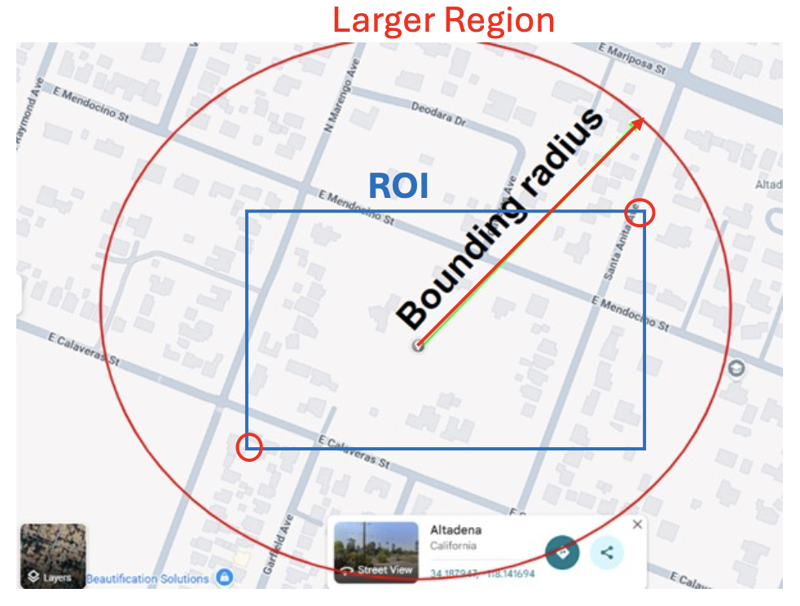
In the JSON input file, the geographic_extent, larger_region, and the region_of_interest are input as shown in code below:
"geographic_extent":{
"larger_region": {
"lat": 34.19707659182189,
"lon": -118.14252114105332,
"radius": 500.0
},
"region_of_interest": {
"min_lon": -118.14636206427565,
"min_lat": 34.196367,
"max_lon": -118.138466,
"max_lat": 34.197378
}
}
Note
The outer circular region is necessary to ensure that realistic turbulance is develops upstream for all buildings in the ROI. Consequently, the ROI bounding box specified by the user must be fully contained within the larger circular region.
The latitude and longitude of a specific point in the world can be obtained by clicking on a point in Google Maps, which display coresponding coordinates.
The radius defining the outer circular region is specified in meters.
The script when it runs, generates two intermediate output files, inventoryTotal.geojson and inventoryROI.geojson. These files are provided in GeoJSON format and can be viewed using standard Geographic Information System (GIS) software, such as ArcGIS or QGIS.
4.10.2.2. BRAILS Specific
As building footprints can be obtained using multiple methods in BRAILS++, and because the resulting building data may not always include height information, the user must specify both the footprint scraper to be used and a default_building_height (in meters). Options for footprint_scraper include USA_Structure (USA), Open Street Maps (OSM) and Microsoft Footprint Data (MS).
"brails_options":{
"scraper":"USA",
"default_building_height":20.0
}
4.10.2.3. Defining the OpenFOAM Computation (Mesh, Boundary Conditions and Algorithms)
This part of the input file is used to define the mesh, boundary conditions and algorithms that will define the OpenFOAM simulation. A number of inputs are required that define the bounary of the mesh, the meshing and the algorithms used in the time stepping CFD simulations. The computational_domain part of the input file must contain the following fields: boundary_mesh_cell_size which defines mesh at boundary surfaces, cells_between_levels, kinematic_viscosity which defines and sections for domain_extents, boundary_conditions, control_dict whose contents will be discussed in following sections.
"computational_domain": {
"roi_surface_level":5.0,
"surrounding_surface_level":4.0,
"boundary_mesh_cell_size":5.0,
"kinematic_viscosity":1.5e-05,
"cells_between_levels":5,
"domain_extents": { ... },
"boundary_conditions": {...},
"refinement_regions": { ...},
"control_dict":{ ...}
}
Domain Extents
The computational domain consists of 8 boundary faces: inlet, outlet, side1, side2, top, ground, ROI, and Surrounding.

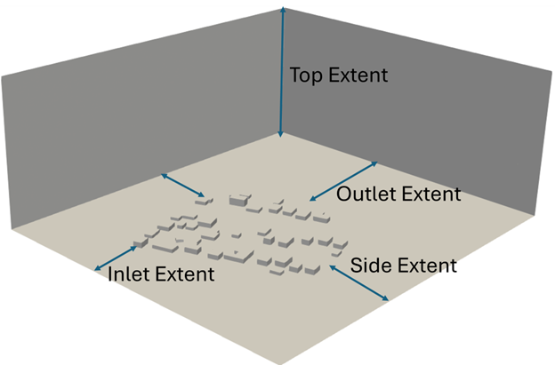
Fig. 4.10.2.3.1 Domain extents.
The inlet face defines where the wind inflow enters the domain. Following the recommendations of COST 732 (Franke et al., 2007), the inlet must be located at least five times the maximum building height, 5Hmax from the outermost building footprint. The inlet face must be oriented perpendicular to the wind direction.
The side boundaries (side1 and side2) are oriented parallel to the wind direction. COST 732 recommends that these lateral boundaries be placed at least 5 Hmax from the outer edge of the community.
The outlet boundary is where the flow exits the domain and must be located at least 15 Hmax downstream of the community.
The top boundary of the domain must also be a distance of more than 5Hmax from the top of the building with maximum height. Since the horizontal extents of the domain are much larger than the vertical extent, the default value for the top boundary is 15Hmax from the ground. The ground, and buildings in the ROI and surrounding are treated wall boundaries, where the flow cannot enter. A depiction of computational domain extents is presented in Fig. 4.10.2.3.1.
These extents are defined as multiplers in the computational_domain/domain_extents part of the input file, which for the online example is the following:
"computational_domain": {
"domain_extents": {
"inlet_multiplier":7.5,
"outlet_multiplier":20.0,
"side_multiplier":10.0,
"top_multiplier":20.0
}
...
}
Refinement Regions
In the previous section, the boundaries of the computational domain were defined. The next step is to describe how this domain is converted into a computational mesh.
In OpenFOAM, the mesh resolution is not uniform throughout the domain. Instead, finer cells are used in regions where the flow is expected to change rapidly—such as near buildings, the ground surface, and areas of strong velocity gradients—while coarser cells are used farther away to reduce computational cost.
To achieve this, the workflow applies mesh refinement parameters that control how the base mesh is subdivided in selected regions. These parameters allow the user to balance accuracy and efficiency by increasing resolution only where it is needed.

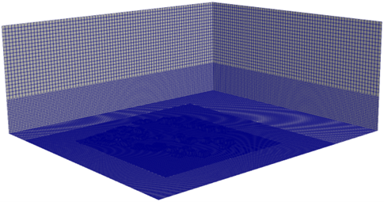
Fig. 4.10.2.3.2 Levels of mesh refinement.
The following section describes the mesh refinement options and how they influence the final OpenFOAM mesh.
The user provides input on the nominal computational cell size for blockMesh, number of cells between refinement levels, the mesh refinement regions, the level of mesh refinement for each region, and the levels of mesh refinement for the ROI and surrounding buildings. Level n mesh refinement would mean the cell size in that region would be . If the user doesn’t define the mesh refinement for the ROI buildings and the Surrounding buildings, the level of refinement for the surrounding would be the minimum level of refinement for the refinement boxes + 1, and the level of refinement for the ROI would be the level of refinement for the surrounding + 1. An example mesh refinement is shown in Fig. 4.10.2.3.2. The origin (0,0,0) of the computational domain is at the bottom right corner of the inlet plane. The domain extents are defined in terms of Hmax. For example, if the user enters a value of 10 for inlet distance multiplier, the inlet will be 10Hmax from the buildings. The user also has the option to name the OpenFOAM case folder (the default is “case”). The outputs generated from this step are saved in the case/system folder and case/constant/triSurface folder. The blockMeshDict and snappyHexMeshDict files are saved in the case/system folder, while the ROI.stl and Surrounding.stl files are saved in the case/constant/triSurface folder.
"computational_domain": {
"boundary_mesh_cell_size":5.0,
"cells_between_levels":5,
"refinement_regions":[
{
"name":"box1",
"level":1,
"x_min":0,
"y_min":0,
"z_min":0,
"x_max":390,
"y_max":345,
"z_max":50
},
{"name":"box2",
"level":2,
"x_min":0,
"y_min":0,
"z_min":0,
"x_max":300,
"y_max":300,
"z_max":30
},
{"name":"box3",
"level":3,
"x_min":50,
"y_min":50,
"z_min":0,
"x_max":250,
"y_max":250,
"z_max":15
}
],
}
Boundary Conditions
Setting appropriate boundary conditions is a critical step in configuring a CFD simulation, as they define how the flow enters, exits, and interacts with the “walls” of the computational domain. The user defined boundary conditions will be broken into two: 1) sides, ground, larger and roi regions and the 2) inlet. The boundary conditions are set in the computational_domain/boundary_conditions section of the input file, an example of which is shown below for the RANS trubulence model.
"computational_domain": {
"boundary_conditions": {
"side":"slip",
"ground_style":"rough",
"roi_style":"rough",
"surround_style":"rough",
"inlet":{
"framework":"RANS",
"Uref":10.0,
"Href":10.0,
"z0":0.1
}
}
}
The side boundaries could be defined as either slip or cyclic. The slip condition mimics the symmetry boundary condition, i.e., there is no flow through the surface. The top boundary is very far away, and hence a slip condition is applied there. The outlet surface is in a zero-pressure condition. The ground, ROI, and surrounding surfaces are solid, walls in the OpenFOAM model; therefore, the velocity is zero at these surfaces. The standard wall functions, smooth or rough may be set for these surfaces.
The Inlet Boundary Condition.
This is the boundary that describes the incoming wind and it’s turbulence. There are three ways to model turbulence, which given in increasing complexity, are: Reynolds averaging (RANS), large eddy simulations (LES), and direct numerical simulations (DNS). For atmospheric flow, using DNS is not feasible due to the very high Reynolds number and a large variation in the length scales. The framework option within the inlet configuration specifies whether the simulation uses RANS or LES. RANS accurately predicts the mean flow field while modeling turbulence through a closure model (Launder and Spalding, 1974). LES explicitly resolves the largest turbulent eddies and models the smaller, subgrid-scale (SGS) motions using a Smagorinsky-type model (Smagorinsky, 1963).
As was shown in code snippet above, the turbulence model is set in the inlet/framework option. if the user chooses the RANS model, the user provides additional Uref, Href and z0 quantaties. The inflow velocity profile is automatically chosen to be logarithmic, given by the following equation:
where is the friction velocity, is the von Karman constant, z is the vertical coordinate, and is the roughness length.
Note
The initial files with the variables (U, k, epsilon, p, and nut) are saved in the case/0 folder. The turbulence parameters are written in the “turbulenceProperties” file and saved in the case/constant folder. The user has the option to also prescribe the kinematic viscosity of air (default is 1.5e-05m2/s). This value is saved in the “transportProperties” file in the case/constant folder.
If the user opts to choose the LES model, in addition to Href, Uref and z0, the user specifies a wind profile option for the inlet specified in the inflow variable. For the inflow option, the user has an option to to specify either a steady logarithmic velocity profile, meanabl, or generate a time-varying velocity profile using the digital filter method described by the Turbulent Inflow Tool (TINF). For the logarithmic profile, the user needs to provide the reference wind speed (Uref), the reference height (Zref), and the roughness length (zo).
"computational_domain": {
"inlet":{
"framework":"les",
"inflow":"meanabl",
"Uref":10.0,
"Href":10.0,
"z0":0.1
}
}
In addition to these inputs, if the user chooses TINF they must provide a CSV file containing the following information: points in the vertical direction, mean wind speed at those points, the 6 Reynolds stress tensor entries, and the 9 length scales. All of these quantities must occupy a column in the CSV file. Even though the user chooses TINF, they need to provide reference wind speed, reference height, and the roughness length for the atmospheric boundary layer (ABL) wall functions used.
"computational_domain": {
"boundary_conditions": {
"inlet":{
"framework":"les",
"inflow":"turbulent",
"path_TINF_file":"wind_profile.csv",
"Uref":10.0,
"Href":10.0,
"z0":0.1
}
}
}
Note
An example screenshot of the CSV file is shown in Fig. 4.10.2.3.3.

Fig. 4.10.2.3.3 An example of csv file for TINF.
The TINF files are saved in the case/constant/boundaryData/inlet folder.
Control Dict
With mesh and boundary conditions set, the last thing to do is to specify parameters that control the time steps, duration, solver and outputs to be used in the CFD simulation, the OpenFOAM control dict, parameters. NOTE: These parameters required are dependent on the turbulence model chosen in the previous section.
For RANS simulations the required inputs, as shown in the code snippet below, are: 1) the end_time of the simulation and the time step, deltaT_sim. The number of iterations then becomes end time divided by time step. (The time step size doesn’t matter as this is a steady-state simulation). The user also needs to specify the interval for writing the files, deltaT_write. The output files will be written after the number of iterations mentioned in the interval. The simulation stops either on convergence or if the simulation reaches the end time, whichever comes first.
"control_dict": {
"end_time":10000.0,
"deltaT_sim":1.0,
"deltaT_write":1.0
}
..note:
The equations are solved using the “SIMPLE” (Semi-Implicit Method for Pressure Linked Equations) algorithm. These details are outputted in the “controlDict” file saved in the case/system folder. Additional files such as “surfaceFeaturesDict”, “fvSolution”, and “fvSchemes” are also saved in the case/system folder containing details of the building features, solution algorithms to linear system of equations, the convergence criteria, and the discretization schemes for various terms. Convergence is reached when all of the residuals are under .
For a LES, there are different parameters needed, as shown in code snippett below. The user is required to provide the initial time step for the simulation, initial_deltaT_sim. The size of the time step is very important in LES as it is a transient simulation. It takes time for the flow to settle and become independent of the initial conditions; therefore, it is suggested that the user give more time than what is required.
"control_dict": {
"end_time":100.0,
"initial_deltaT_sim":0.05,
"max_deltaT_sim":0.01,
"adjust_time":"yes",
"solver":"pisoFoam",
"max_courant":1.0,
"deltaT_write":1.0,
"num_wind_profiles":0,
"num_section_planes":0
}
For LES the user also needs to specify solver, solver, with the value being either pisoFoam or pimpleFoam. “PISO” (Pressure-Implicit with Splitting of Operators) and “PIMPLE” (PISO + SIMPLE). Moreover, if the user selects “PIMPLE”, there is an option to automatically adjust the time step according to the maximum Courant number (also prescribed by the user). If the user chooses the “PISO” algorithm, the initial time step will remain constant throughout the simulation (even though there is an option to select the adjusted time step option).
As opposed to RANS, in LES mode, the write interval is based on run-time and not the number of iterations. For example, if the user chooses 1 as the write interval for LES, the outputs will be saved at each second rather than each iteration. The user has the option to prescribe several profiles and planes for recording velocity or pressure, or both, at every iteration. The profile contains a line of probes (number is user-defined), with the start and end points of the line defined by the user. For the plane, the user needs to define the point in the plane and the normal vector to the plane. The point must not be on the boundary.
- “control_dict”: {
“end_time”:100.0, “initial_deltaT_sim”:0.05, “max_deltaT_sim”:0.01, “adjust_time”:”yes”, “les_algorithm”:”pisoFoam”, “max_courant”:1.0, “deltaT_write”:1.0, “num_wind_profiles”:0, “num_section_planes”:0
}
4.10.3. Running in OpenFOAM
The user is required to have OpenFOAM v10 installed on their computer. Once the user has generated all the required files using the above workflow, they can run the simulation using the following procedure:
Open the Linux terminal in which OpenFOAM v10 is installed and go to the case folder.
Run the
blockMeshcommand to generate the background mesh.Run the
surfaceFeaturescommand to create the building features.Optionally run
decomposeParto decompose the mesh.Run
snappyHexMesh -overwritecommand either in serial or parallel mode.If
snappyHexMeshwas run in parallel, run reconstructParMesh -constant command to reconstruct the mesh.Optionally run
decomposePar -force, to decompose the mesh and run the simulation in parallel.Run the
simpleFoamorpimpleFoam, or pisoFoam command (depending on the algorithm chosen by the user) either in serial or parallel mode.If the user ran the simulation in parallel, then run the
reconstructParcommand.
4.10.3.1. Post-process in Paraview
The user is required to have Paraview 5.10, which usually comes with the OpenFOAM v10 installation. The user can open the Community.foam file in the case folder in ParaView and view the simulation results. The profile and plane data can be viewed in case/postProcessing/Profile_no. or Plane_no./time folder. The plane outputs are saved for each time instant in a .vtk file, which can be directly viewed in ParaView, whereas the profile outputs are saved in a text file, and a Python or MATLAB script can be written if the user needs to access the values and plot the time history.
4.10.4. Manipulating the OpenFOAM files for miscellaneous simulations
The above workflow produces an OpenFOAM workflow specifically for the ABL flow in an urban environment. The same workflow can be used for other types of wind simulations, such as wind flow in a wind tunnel or wind flow over user-defined structures (any geometry). Here’s a breakdown of the parameters and files that can be modified to run any kind of wind simulation.
4.10.4.1. Domain Extents and boundaries
The blockMeshDict file contains the details of the domain extents, the number of cells in each direction, and the boundary type. The users can change the vertices of the domain as per their choice, and also the number of cells in each direction in the blocks section of the file. The boundary patches can be modified in the boundary section. If the user wishes to define faces other than sides as cyclic, they can change the type to cyclic and add another argument as neighbourPatch with the patch that it’s cyclic with. If the user wishes to make another patch as a wall other than ground, they can just change the type from patch to wall. Make sure to also change the boundary conditions in the case/0/field variables files. Additionally, users can add more blocks and also define different mesh grading in all directions.
4.10.4.2. User-defined obstacles
If the user wants to define the geometry of the obstacles, they need to provide the STL file/s and move them to the case/constant/triSurface folder. The user needs to modify the surfaceFeaturesDict and the snappyHexMeshDict files. The user needs to remove the ROI.stl and Surrounding.stl files and put in the name of the user-defined STL file and the user-defined region name. The user can also modify the snappyHexMeshDict file to change the extent of refinement regions and add more regions if required. Additionally, the level of refinement can also be changed. The user is required to also modify the boundary conditions in the field variables in the case/0 folder. The region of obstacles needs to be added in the boundaryField section.
4.10.4.3. User-defined initialization and inflow
The workflow provides options between a logarithmic wind profile and a TINF wind profile. However, if the user requires a different wind profile, they can modify the case/0/U, k, epsilon files for RANS and the case/0/U file for LES. In the boundaryField section, at the inlet, the user can input the profile of choice. If OpenFOAM v10 has standard profiles available, the user can visit the website and apply the condition as shown on the website. Alternatively, the user can assign the value of a variable at each face of the inlet boundary. This can be done in the following way:
In the case folder, after creating the mesh (blockMesh and snappyHexMesh), run the postProcess -func writeCellCentres command to get the coordinates of each face at the boundary and each cell in the domain. The coordinates are saved in the files “C”, “Cx”, “Cy”, and “Cz” files inside the case/0 folder.
Extract the y and z coordinates for the inlet face and then calculate the variables at each of those coordinates using a Python script or a MATLAB script.
The following format can then be used to input into the inlet patch of the boundaryField section of a field variable:
A similar procedure can be used to input a user-defined initial profile inside the domain. The change would be made in the internalField section. Instead of a uniform, a nonuniform value would have to be described. All three coordinates would be required to calculate the profile values.
4.10.4.4. Mapping fields
It is common to run a coarser or a RANS simulation before running an LES simulation to initialize the variables for faster convergence. A “mapFieldsDict” file is required to do that. An example of such a file is shown in fig-advanced-cfd-3. The user can modify the dict according to the requirements. The user can then map fields from one folder to another using the following command:
mapFields path_to_source_folder -sourceTime -latestTime.
Type mapFields -help for more options.

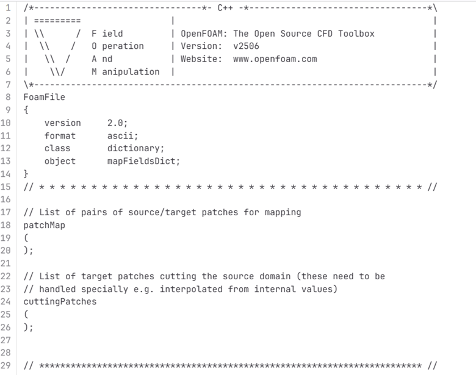
Fig. 4.10.4.4.1 An example of the mapFieldsDict file.
4.10.4.5. Turbulence Modeling and wall functions
If the user wishes to use different models, such as DES (Detached Eddy Simulations), RANS , or LES dynamic Smagorinsky, then the user would need to modify the turbulenceProperties file and add or remove field variables depending on the needs of the model. The usage for other turbulence models can be found in the OpenFOAM documentation.
The workflow described above uses standard ABL wall functions. However, different wall functions can be used if the user needs. The nut, k, epsilon files must be modified to implement the wall function. The modification needs to be made in the wall boundaries in the boundaryField section.
4.10.5. Example
This example provides a step-by-step guide for performing a community-level wind simulation using the RANS approach, following the workflow outlined above.
4.10.5.1. Target region for the simulation
In this example, the coordinate information for both the target region and the ROI is provided in Table 1 below using longitude and latitude. The target region is defined as a circular area centered on the given coordinate with a radius of 100 meters, while the ROI is specified by its bounding coordinates.
The user interface for inputting the given data is shown in Fig. 4.10.5.1.1 and the output creating the geojson files is provided in Fig. 4.10.5.1.2.

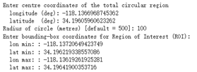
Fig. 4.10.5.1.1 Inputs for generating the building footprints.

Fig. 4.10.5.1.2 Output generating the building footprints.
As illustrated in Fig. 4.10.5.1.2, the total region includes 37 building footprints, while the ROI contains 2 building footprints—consistent with geojson output shown in Fig. 4.10.5.1.3.

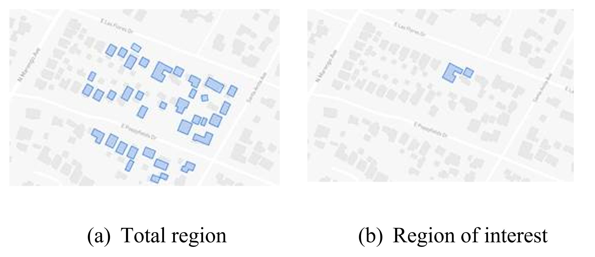
Fig. 4.10.5.1.3 Visualization of the generated geojson files.
Based on the geojson files, STL files for both the surrounding region and the region of interest (ROI) required for the simulation are generated, as illustrated in Fig. 4.10.5.1.4.

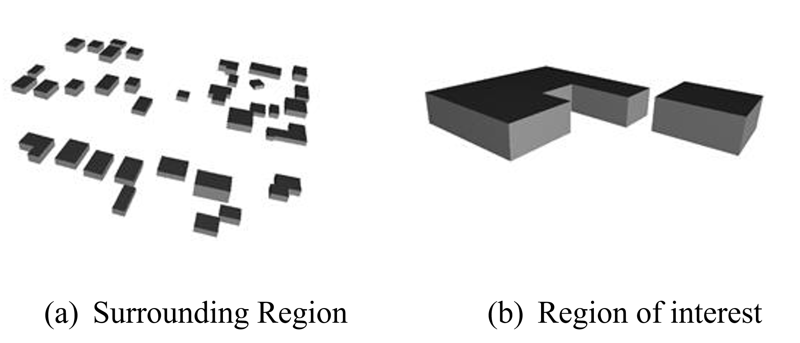
Fig. 4.10.5.1.4 Visualization of the generated STL file.
4.10.5.2. Mesh
Background mesh
The wind direction is taken as 225 degrees counterclockwise from East (i.e. in the SW direction). The side boundaries were set to slip for this simulation. An example input snapshot is shown in Fig. 4.10.5.2.1.

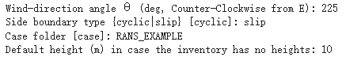
Fig. 4.10.5.2.1 Inputs for generating background mesh.
The domain extents were defined as shown in Fig. 4.10.5.2.2. The inlet was a distance of 7.5Hmax from the total region, the outlet was 20Hmax from the total region, the sides were 10Hmax, and the top was 20Hmax from the total region.

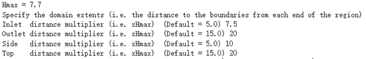
Fig. 4.10.5.2.2 The domain extents.
The computational cell size for the background mesh was 5 meters in all directions. The output is shown in Fig. 4.10.5.2.3. The script also outputs the domain extents for the ease of providing mesh refinement regions.

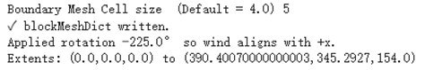
Fig. 4.10.5.2.3 Output for successfully generating the blockMeshDict and the domain extents.
Regional refinements Three refinement boxes were defined to get a good mesh resolution. The extents and the levels of refinement are presented in Fig. 4.10.5.2.4.
Surface refinements
The surface refinement level was set to 5 for the region of interest (ROI) and to 4 for the surrounding buildings. The number of cells between each refinement level was 10. With these settings, the input configuration for generating the snappyHexMeshDict is complete, as shown in Fig. 4.10.5.2.4 and Fig. 4.10.5.2.5

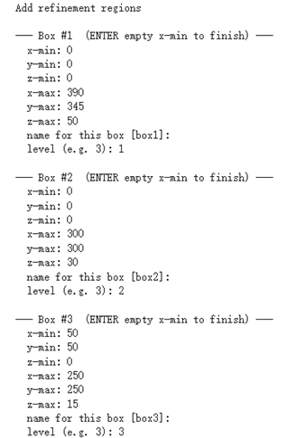
Fig. 4.10.5.2.4 Inputs to define regional refinement bounding boxes.

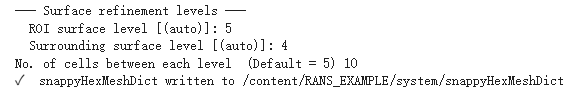
Fig. 4.10.5.2.5 Output for successfully generating the snappyHexMeshDict and the mesh.
4.10.5.3. Transport property
The default kinematic viscosity is used in this example.

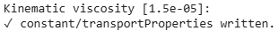
Fig. 4.10.5.3.1 Output for successfully generating the transportProperties.
4.10.5.4. Numerical setup
Wind characteristic
A wind speed of 20 m/s at a reference height of 50 m, with a terrain roughness length of 1 m is prescribed as shown below in Fig. 4.10.5.4.1.

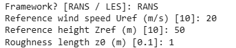
Fig. 4.10.5.4.1 Inputs to select the turbulence model and define the wind characteristics.
4.10.5.5. Boundary conditions
At the ground surface, a smooth wall boundary condition is applied whereas, on the building surfaces, a rough wall boundary condition is applied. With these settings, the turbulenceProperties and boundary field files were generated, as illustrated in Figure 19.

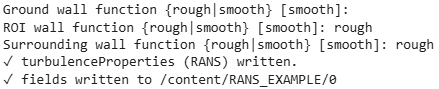
Fig. 4.10.5.5.1 Inputs and outputs for generating the boundary field file.
4.10.5.6. Simulation time setup
The simulation duration was 10,000 with a time step of 1, indicating that the RANS simulation will run for 10,000 iterations. The output data was written every 1,000 iterations. With these inputs, the controlDict file was generated, as shown in Fig. 4.10.5.6.1.
Ten processors were used to run the simulation in parallel. This will automatically generate the decomposeParDict file using the scotch method, allowing the simulation to run in parallel, as Fig. 4.10.5.6.1 shows.

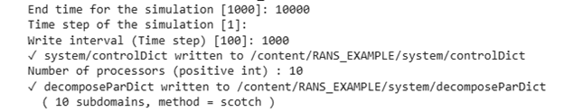
Fig. 4.10.5.6.1 Snapshot for generating controlDict and decomposeParDict.
4.10.5.7. Visualization of the CFD output
Mesh
Fig. 4.10.2.3.1 shows the perspective view of the computational domain used in the example and Fig. 4.10.2.3.2 shows the mesh refinement levels. It can be seen that the mesh is finer near the buildings and even finer near the buildings in the ROI. A cross section of the mesh levels along the flow direction can be viewed in Fig. 4.10.5.7.1.

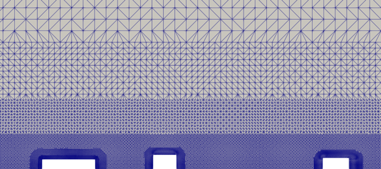
Fig. 4.10.5.7.1 Typical cross section along the flow direction.
Wind profile
Fig. 4.10.5.7.2 shows the mean velocity profile at the inlet at the end of the simulation. The OpenFOAM wind profile is almost the same as the Target wind input.

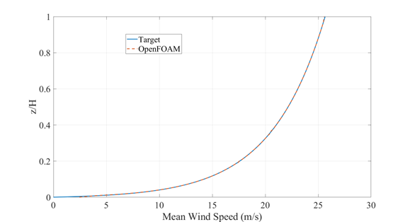
Fig. 4.10.5.7.2 Typical cross section along the flow direction.
Pressure and velocity field slices
Fig. 4.10.5.7.3 shows the pressure and velocity fields at a height of z = 3m at the end of the simulation. We can see that the boundaries are not much affected by the buildings which shows that the boundaries are far enough to not cause any significant changes to the wind flow in the vicinity of the region.

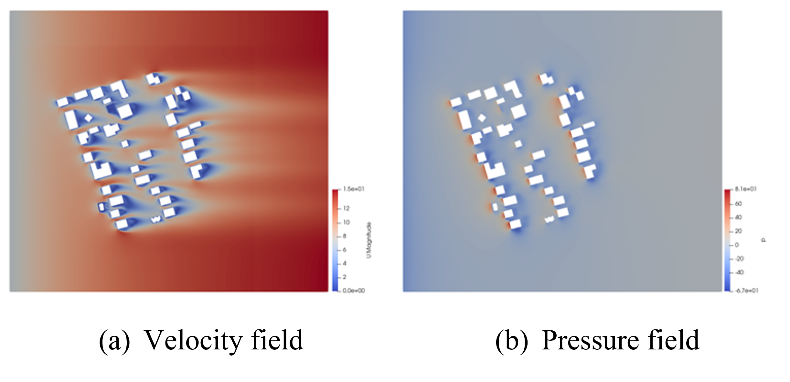
Fig. 4.10.5.7.3 Velocity and pressure field at z=3m.
Franke, J., Hellsten, A., Schlünzen, K.H. and Carissimo, B., 2007. COST Action 732: Best practice guideline for the CFD simulation of flows in the urban environment.
B.E. Launder and D.B. Spalding. Computer methods in applied mechanics and engineering, 3(2):269–289, 1974.
Smagorinsky, J. General Circulation Experiments with the Primitive Equations I: the Basic Experiment. Monthly Weather Review, 91(3):99-164, 1963..